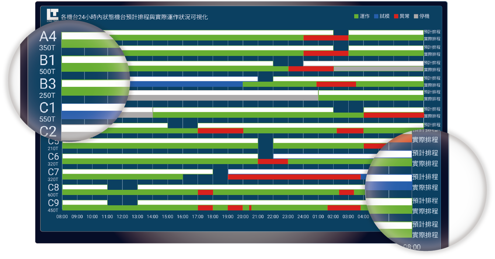

近年來中美貿易戰、新冠疫情等環境因素，台灣也乘上了點順風的風勢，雙肩與塑膠射出廠合作，根據他們產線需求量身訂製專屬他們的即時化資訊系統。
我們整合射出現場所需管控戰情，並將資訊分類成四大類，呈現在生管部門戰情室與現場鐘錶處，隨時能讓生管、品管巡檢與現場作業主管了解每台機台產線狀況。
團隊夥伴
我們擁有一位出色的產品經理、一位才華洋溢的UI UX設計師、一位腦筋靈活的前端工程師和一位邏輯縝密的後端工程師。
身為UI UX我負責使用者訪談研究、使用流程設計、介面設計、操作測試與回饋。

根據生產管理部門與現場射出工程師所提出的意見，將需求與資訊分為各機台資訊、訂單資訊、嫁動狀態、和機台監控時間等。

產線狀況無效統計
01.盲目的生產，造成重工
02.無法即時了解目前產量
03.無控管訂單與時間關係
機台狀況與產值無驗證
01.機台資訊無分類
02.無法計算機台實際產能時間
03.無法了解機台於各區間狀態
04.哪些機台有產能?哪些沒有?
生產、品管與現場人員無共識
01.生管無法即時掌握各產線狀況
02.無法即時了解產線訂單生產情況
03.由於產線無透明資訊，沒有效溝通
有時機台排程無法像想像中美好，由於計畫趕不上變化，而中間的落差曾導致延遲交貨，因此我們討論出如何確認機台生產的訂單是否符合當初預期的行程。
機台故障、臨時插單、缺料缺人都是造成訂單延遲的幾項因素，雖然我們技術上無法即時統計哪種原因造成當下狀況，但起碼能讓管理者了解當初計畫及實際運行狀態的落差。

預計排程
01.為白底長條圖
02.綠框白底-這時間中預計生產
03.籃框白底-這時間內預計試模
04.灰框白底-這時間內無運作
實際排程
01.實心綠長條圖-機台回傳訊號為持續運作
02.實心藍長條圖-機台回傳訊號調整參數
03.實心灰長條圖-該機台無訊號
04.實心紅長條-換模、卡件、模具無法閉合都在此範疇
機台資訊限制
01.目前無法精確判斷試模與生產訊號
02.這兩者需要人為輔助與確認
過去在未有即時可視化時，整場產線的狀況與管理確實像瞎子摸象，無法精算機台產能、電費花得莫名其妙卻沒效能、人力無法即時調配等問題相當困擾。後來雙肩架上可視化系統後，讓資訊變得更透明與即時，例如該機台臨時有狀況無法排除，原本
此產線上的作業人員可以即時調配到其他機台，減少人員閒置的問題、可以即時知道哪台機台有狀況、能計算當天機台的稼動狀態、能夠利用製令單即時化判斷是否管控庫存，品檢何時進場與調控物料等。
目前我們還在與機台廠商優化回傳訊號的精確度，未來能夠完全的脫離人力，達到全面自動監控機台狀態，排除人為因素讓資訊更加客觀與精確!